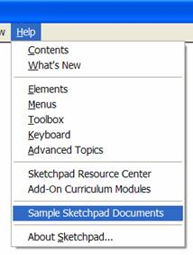

There are a whole bunch of useful examples and custom tools that come pre-installed with Sketchpad. To view them, go to the Help menu, and select “Sample Sketchpad Documents.” This will open the Sample Sketches folder. To view the sample Custom Tools, go up one folder, and you will see a Custom Tools folder. If you find any of these tools useful, just copy them to your Tool Folder (see the Help system for more information on how to use the Tool Folder), and then they will be available every time you run Sketchpad!
Happy Sketching!
